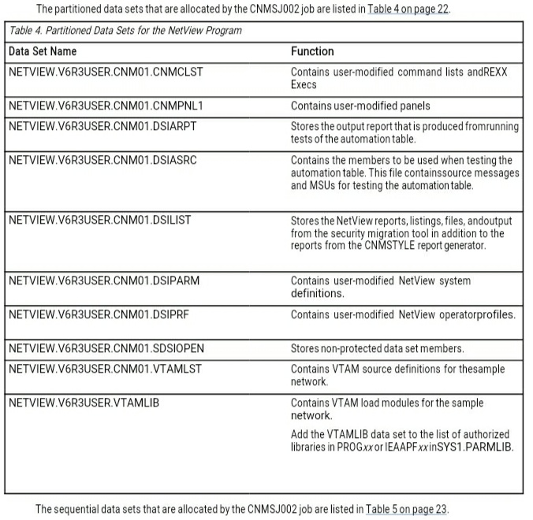
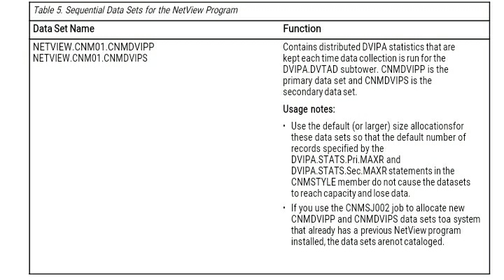
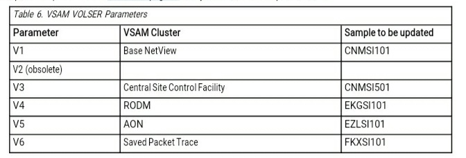
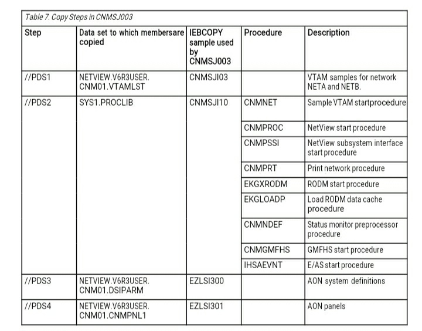
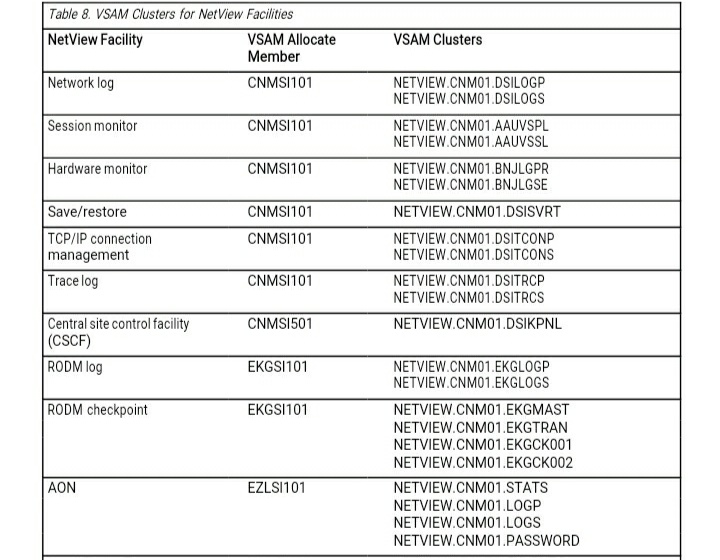
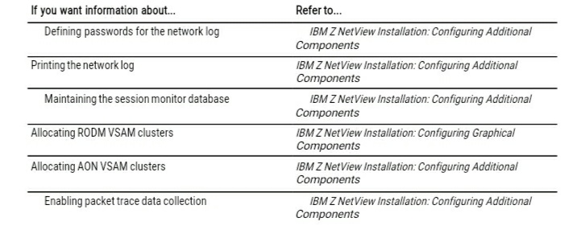

____________________________________________________
Chapter 3. Preparing the NetView Program
This chapter describes the steps that help you prepare the NetView program. Each step gives
you explicit directions for installing an operational NetView system. Unless otherwise stated,
each step is required for a NetView system to be functional.
Creating the Installation JCL Samples Library Using Job CNMSJBUP
The CNMSJBUP job in the NETVIEW.V6R3M0.CNMSAMP data set copies the installation
members and JCL samples in the CNMSAMP data set into the
NETVIEW.V6R3USER.INSTALL data set. Not all of the NetView sample library is copied.
The installation members that are copied are described in this chapter. Use the USER.INSTALL
data set to edit and submit installation JCL (from a data set other than an SMP/E-managed data
set).
Follow these steps to create the installation JCL samples library:
1. Edit CNMSJBUP to match your system naming conventions, if necessary.
2. Review the variables in the comments supplied in this job. Change the &UNIT and &SER
variables to match your installation, if needed.
3. Run CNMSJBUP.
4. Verify your return codes before continuing with the next step.
Using the Installation JCL Samples Library
For the remaining steps, edit and run the sample JCL in NETVIEW.V6R3USER.INSTALL.
Warning: If instead you use the sample JCL in the NETVIEW.V6R3M0.CNMSAMP data set
to run the installation jobs described in this chapter, you might lose your existing
customization when you apply maintenance.
Defining the User Catalog Using the CNMSJ001 Job
Job CNMSJ001 creates an ICF catalog and defines the ALIAS name NETVIEW as the high-
level qualifier for the NetView data sets.
Run job CNMSJ001 if you did not define this alias name during the NetView program directory
installation and you are going to use this high-level qualifier. To define the user catalog,
perform the following steps:
1. Review the comments in the JCL. If you are using one of your existing catalogs, comment
out the first step in CNMSJ001 and change the RELATE value in the second step
accordingly. You can also change the &UNIT and &SER JCL variables to reflect a different
DASD device type.
2. Run CNMSJ001.
3. Verify your return codes before continuing with the next step.
A return code of 12 can indicate a duplicate data set name exists from a previous run or
release. The duplicate name might not require correction.
Allocating Data Sets Using the CNMSJ002 Job
The CNMSJ002 job allocates partitioned and sequential data sets. These data sets are used
by the NetView system that you are installing. The data set names reflect the values for
&DOMAIN and &Q1 that are supplied by the NetView product.


The data sets allocated by the CNMSJ002 job are used to hold user data. Initially, they are
empty data sets. In some cases, you might need to make modifications to the data set
members provided with the NetView program. To do this, copy the members that you need
to modify from the NETVIEW.V6R3M0 data set to the NETVIEW.V6R3USER.domain data set
and then make modifications to the copied members in the user data set. This preserves the
original member and protects your modifications when maintenance is applied. For example, to
make changes to the CNMSTUSR member, copy the CNMSTUSR member from the
NETVIEW.V6R3M0.DSIPARM data set to the NETVIEW.V6R3USER.CNM01.DSIPARM data set,
and then make your modifications to the CNMSTUSR member in the user DSIPARM data set.
Although data set NETVIEW.V6R3USER.CNM01.DSIPRF is not used for operator profiles if an
SAF security product is used exclusively for operator definitions, it is required to be present
when the NetView address space is started. Because this data set is used for other members
besides operator profiles, such as DSITCPRF.
Allocate the data sets in the following way:
1. Review the variables and associated comments in the CNMSJ002 job. Change the &UNIT
and &SER variables to match your installation, if needed.
2. Change the &DOMAIN variable to match the NetView domain name you are installing.
3. Run CNMSJ002.
4. Verify your return codes before continuing with the next step.
Changing Sample Installation Jobs Using the CNMSJ000 Job
You can use the CNMSJ000 job to do the following tasks:
• Change the domain
• Create a VTAM APPL major node
• Change VSAM volume serial information
If you are installing the NetView program in a domain other than CNM01 for network NETA, or
a subarea other than 01, CNMSJ000 converts the NetView samples in
NETVIEW.V6R3M0.CNMSAMP and
NETVIEW.V6R3M0.DSIPARM and places them into
NETVIEW.V6R3USER.domain.DSIPARM, NETVIEW.V6R3USER.INSTALL, and
NETVIEW.V6R3USER.domain.VTAMLST.
Job CNMSJ000 also creates a VTAM APPL major node to define the NetView program to
VTAM. If one of the sample network domains and subareas is chosen (CNM01, CNM02,
CNM99 in NETA, or B01NV in NETB), the VTAM APPL major node already exists as part of the
VTAM samples shipped with the NetView program. If the domain and subarea chosen are not
one from the sample network, member NETVAPPL is created in data set
NETVIEW.V6R3USER.domain.VTAMLST.
NETVAPPL can be used as part of your existing VTAM definitions if the resource naming
convention used by NETVAPPL matches your system definitions. If the resource naming
convention does not match your system definitions, you can edit NETVAPPL and your NetView
definitions so that your resource names are consistent.
To change the domain, subarea numbers, and VSAM volume serial information:
1. Edit job CNMSJ000 and specify the domain ID (&DOMAIN) and subarea number
(&SANUM) you want to use during your installation.
2. Update the parameters in Table 6 on page 24 with your volume serial specifications:

Usage notes:
a. These samples are used as input for job CNMSJ004. For more information, see
“Allocating VSAM Clusters Using the CNMSJ004 Job” on page 26.
b. If you specify NOVOLSER, the volume specification is removed in the VSAM allocation
member. This allows the VSAM cluster to be allocated to any available volume.
3. Run CNMSJ000.
4. Verify your return codes before continuing with the next step.
The remaining steps assume that you are installing the NetView program in subarea 01 and
domain CNM01. If you are installing the NetView program in a subarea other than 01 and
domain CNM01, make the appropriate substitutions throughout this installation.
Loading Members of Partitioned Data Sets Using the CNMSJ003 Job
The CNMSJ003 job copies selected members from the following data sets:
• NETVIEW.V6R3USER.INSTALL
• NETVIEW.V6R3M0.CNMSAMP
• NETVIEW.V6R3M0.DSIPARM
• NETVIEW.V6R3M0.CNMPNL1
With the exception of the SYS1.PROCLIB data set, the copied members are placed into the
user data sets described in “Allocating Data Sets Using the CNMSJ002 Job” on page 21.
Table 7 on page 25 lists the steps in CNMSJ003.

To copy members:
1. If necessary, edit the CNMSJ003 job to match your system naming conventions. You can
change the specification for the Q2 variable on the PDS2 step to use a different high-level
qualifier for PROCLIB.
2. Step PDS2 is initially commented out to prevent the overlaying of existing members in
the target PROCLIB data set. Before running this step, ensure that the members that are
copied do not exist in the PROCLIB data set, so they do not get replaced (see Table 7 on
page 25).
3. Run the CNMSJ003 job.
4. Verify your return codes before continuing with the next step.
Reviewing Canzlog Archiving Allocation Parameters
The NetView Canzlog log is a NetView logging facility that contains NetView, system, and
some job messages. Archiving of the Canzlog log is active by default. This archiving function
copies the Canzlog log into sequential data sets that are dynamically allocated by the
NetView program after NetView initialization.
The parameters used by the NetView program to allocate the Canzlog archive data sets are
defined in the NetView CNMSTYLE configuration member. Allocation parameters are provided for
the following sequential data sets:
• Message data sets
• Index data sets and Primary Index data set
Review the allocation parameters before starting the NetView program. For information on
updating the CNMSTYLE member, see
“Configuring Allocation Parameters for Canzlog Archive
Data Sets” on page 54.
Usage note: If you decide to update the CNMSTYLE member at a later time, the
following BNH803I message is issued during NetView initialization:
BNH803I VALUE *NONE* FOR KEYWORD ARCHIVE.HLQ CONFLICTS WITH VALUE YES FOR KEYWORD ARCHIVE.WRITE
The Canzlog archiving function is disabled and Canzlog data is not archived. By not setting up
the archive data sets, you can lose message data when the Canzlog log wraps and writes
over previously stored message data.
Allocating Data Sets for Canzlog Print
NetView provides functionality for printing Canzlog messages to a sequential data set or a
member of a partitioned or partitioned extended data set by using the PRINT command.
The data sets need to be allocated before you use PRINT. The following example shows
attributes for defining a sequential data set:
Organization . . : PS
Record format . . : FB
Record length . . : 134
Block size . . . . : 27872
1st extent cyls . .: 15
Secondary cyls . . : 2
The next
example
shows
sample
attributes
for a
partitioned or partitioned extended data set:
Organization . . . . . : PO
Record format . . . . : FB
Record length . . . . : 134
Block size . . . . . : 27872
1st extent cylinders..: 15
Secondary cylinders ..: 2
A default data set for use with the PRINT command can be defined in CNMSTYLE. For
information about configuring CNMSTYLE to support Canzlog printing, see Configuring
parameters for Canzlog Print in Installation: Configuring Additional Components.
Allocating VSAM Clusters Using the CNMSJ004 Job
The CNMSJ004 job allocates the VSAM clusters for various NetView facilities.
Table 8 on
page 27 lists the VSAM cluster names associated with these facilities, and the names of the
members containing information for each VSAM cluster.
Note: The records needed for the system to view databases as active data sets are added
during NetView component initialization.
Consider the following information before running the CNMSJ004 job:
1. Review CNMSID01 and each of the VSAM allocate members listed in
Table 8 on page 27.
These sample input members provide the name, volume, catalog, and password
specifications for the VSAM clusters that are being defined or deleted. Ensure that these
values are correct for your system and that the VSAM cluster names match the names you
use in your NetView startup procedure, CNMPROC. The supplied default volume for the
NetView VSAM clusters is VOL(CPDLB2), unless you have run job CNMSJ000 to change the
volume information for each of the VSAM allocate members.
For the RODM data sets, ensure that the VSAM cluster names match the names you use in
your RODM startup procedure, EKGXRODM. If you add additional data window checkpoint
data sets (for example, EKGCK003), also define them to EKGXRODM.

Note: All members referenced by the CNMSJ004 job for deleting or allocating VSAM
data sets are found in the NETVIEW.V6R3USER.INSTALL data set.
2. If you want to define a security password for the VSAM data sets, add the password to the
CNMSTPWD member in the DSIPARM data set. Also add this password to the VSAM allocate
members (for example CNMSI101). Specify a password on the catalog that contains the
entry for the data set before the system verifies the password for that data set.
To run the CNMSJ004 job to allocate or reallocate VSAM clusters, follow these steps:
1. If you are reallocating VSAM clusters, edit member CNMSID01 to uncomment the DELETE
statements for the VSAM clusters to be reallocated.
2. Run the CNMSJ004 job.
3. Verify that all steps ran correctly. If you are reallocating VSAM clusters and uncommented
only some of the names in member CNMSID01, the DEFINE statements for the remaining
VSAM clusters might fail. This is acceptable because those VSAM clusters were not being
reallocated.
If you are operating in an environment such as an SMS environment and receive an open error
such as the DSI556I message with a return code of X'08' and an ACB error field value of
X'A8', you can delete and redefine the database, moving it to a different volume. To accomplish
these tasks:
1. Free the database.
2. Delete the database.
3. Reallocate the database.
You can use the NetView FREE and ALLOCATE commands to free and reallocate the database.
Optional: You can use the CNMSJ005 job to initialize the AAUVSPL and BNJLGPR data sets
that are allocated by the CNMSI101 sample. These data sets are used when you verify the
NetView installation.

Initializing the Saved Packet Trace Database Using the CNMSJ033 Job
The CNMSJ033 job loads an initialization record into the Saved Packet Trace database that
was allocated using the CNMSJ004 job.
To initialize the Saved Packet Trace database:
1. In the REPRO step, review and update as necessary the OUTDATASET high-level qualifier for
your local NetView VSAM catalog. You defined the catalog using the CNMSJ001 job.
2. Run the CNMSJ033 job.
3. Verify your return codes.
If you need to rerun the CNMSJ033 job for any reason, first update and rerun the job you
ran in “Allocating VSAM Clusters Using the CNMSJ004 Job” on page 26 to delete and
reallocate the Saved Packet Trace database.